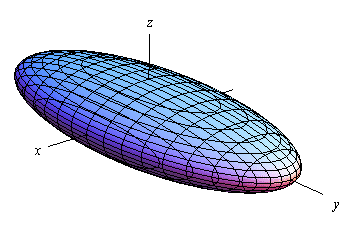
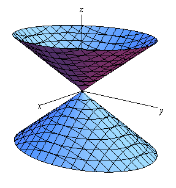
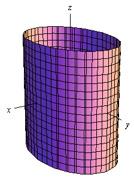
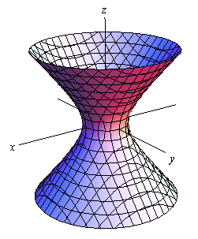
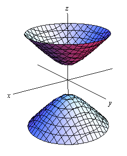
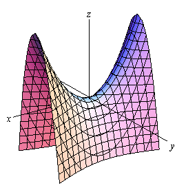
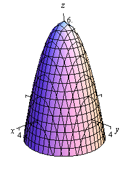
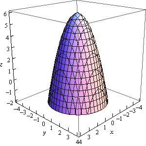

In the previous two sections we’ve looked at lines and
planes in three dimensions (or  )
and while these are used quite heavily at times in a Calculus class
there are many other surfaces that are also used fairly regularly and so we
need to take a look at those.
)
and while these are used quite heavily at times in a Calculus class
there are many other surfaces that are also used fairly regularly and so we
need to take a look at those.
In this section we are going to be looking at quadric
surfaces. Quadric surfaces are the
graphs of any equation that can be put into the general form
where A, … , J are constants.
There is no way that we can possibly list all of them, but
there are some standard equations so here is a list of some of the more common
quadric surfaces.
Ellipsoid
Here is the general equation of an ellipsoid.
Here is a sketch of a typical ellipsoid.

If then we will have a sphere.
Notice that we only gave the equation for the ellipsoid that
has been centered on the origin. Clearly
ellipsoids don’t have to be centered on the origin. However, in order to make the discussion in
this section a little easier we have chosen to concentrate on surfaces that are
“centered” on the origin in one way or another.
Cone
Here is the general equation of a cone.
Here is a sketch of a typical cone.

Note that this is the equation of a cone that will open
along the z-axis. To get the equation of a cone that opens
along one of the other axes all we need to do is make a slight modification of
the equation. This will be the case for
the rest of the surfaces that we’ll be looking at in this section as well.
In the case of a cone the variable that sits by itself on
one side of the equal sign will determine the axis that the cone opens up
along. For instance, a cone that opens
up along the x-axis will have the
equation,
For most of the following surfaces we will not give the other
possible formulas. We will however
acknowledge how each formula needs to be changed to get a change of orientation
for the surface.
Cylinder
Here is the general equation of a cylinder.
This is a cylinder whose cross section is an ellipse. If we have a cylinder whose cross section is a
circle. We’ll be dealing with those
kinds of cylinders more than the general form so the equation of a cylinder
with a circular cross section is,
Here is a sketch of typical cylinder with an ellipse cross
section.

The cylinder will be centered on the axis corresponding to
the variable that does not appear in the equation.
Be careful to not confuse this with a circle. In two dimensions it is a circle, but in
three dimensions it is a cylinder.
Hyperboloid of One
Sheet
Here is the equation of a hyperboloid of one sheet.
Here is a sketch of a typical hyperboloid of one sheet.

The variable with the negative in front of it will give the
axis along which the graph is centered.
Hyperboloid of Two
Sheets
Here is the equation of a hyperboloid of two sheets.
Here is a sketch of a typical hyperboloid of two sheets.

The variable with the positive in front of it will give the
axis along which the graph is centered.
Notice that the only difference between the hyperboloid of
one sheet and the hyperboloid of two sheets is the signs in front of the
variables. They are exactly the opposite
signs.
Elliptic Paraboloid
Here is the equation of an elliptic paraboloid.
As with cylinders this has a cross section of an ellipse and
if it will have a cross section of a circle. When we deal with these we’ll generally be
dealing with the kind that have a circle for a cross section.
Here is a sketch of a typical elliptic paraboloid.

In this case the variable that isn’t squared determines the
axis upon which the paraboloid opens up.
Also, the sign of c will
determine the direction that the paraboloid opens. If c
is positive then it opens up and if c
is negative then it opens down.
Hyperbolic Paraboloid
Here is the equation of a hyperbolic paraboloid.
Here is a sketch of a typical hyperbolic paraboloid.

These graphs are vaguely saddle shaped and as with the
elliptic paraoloid the sign of c will
determine the direction in which the surface “opens up”. The graph above is shown for c positive.
With the both of the types of paraboloids discussed above
the surface can be easily moved up or down by adding/subtracting a constant
from the left side.
For instance
is an elliptic paraboloid that opens downward (be careful,
the “-” is on the x and y instead of the z) and starts at instead of .
Here are a couple of quick sketches of this surface.
 
Note that we’ve given two forms of the sketch here. The sketch on the right has the standard set
of axes but it is difficult to see the numbers on the axis. The sketch on the left has been “boxed” and
this makes it easier to see the numbers to give a sense of perspective to the
sketch. In most sketches that actually
involve numbers on the axis system we will give both sketches to help get a
feel for what the sketch looks like.